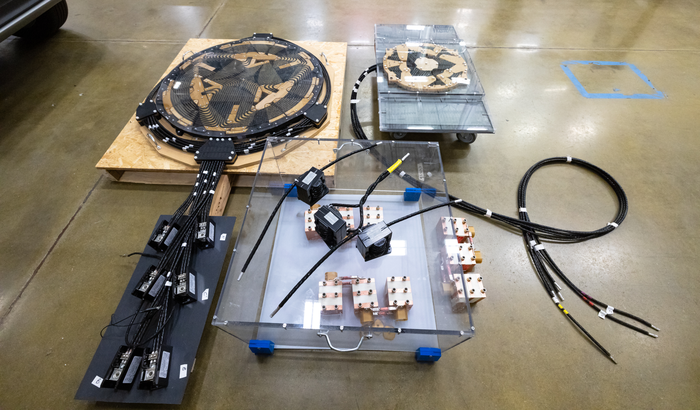

Hello! I'm Gopinath S, currently pursuing a Master of Computer Applications at Coimbatore Institute of Technology (2024 - 2026). My objective is to grow as a skilled professional by leveraging creativity, leadership, and technical expertise to contribute to innovation and growth.
I hold a Bachelor's degree in Computer Applications from Bishop Heber College (2021-2024), where I gained a solid foundation and also took on leadership responsibilities as the Joint Secretary of the BCA Department.
My technical skills include programming in Python, Java, and JavaScript. I have hands-on experience in web development, particularly with the MERN stack (MongoDB, Express, React, Node.js), along with HTML and CSS. I further developed these skills during a MERN Full Stack Development Internship at Revamp Academy in Coimbatore (Sept 2024-Dec 2024). I'm an active listener and strive to apply leadership qualities in my work.
My Skills
Programming Languages: Python, Java, JavaScript
Web Frontend: HTML, CSS, React
Web Backend: Node.js, Express
Databases: MongoDB
Web Stack: MERN (MongoDB, Express, React, Node.js)
Soft Skills: Leadership, Active Listening
Certifications: MERN Stack, Basics of SQL, Foundation in UX Design
My Projects
Here are some of the projects I've worked on. Click a card for details or use arrows to navigate!
Gopinath SProject 1 • Java Servlets, JSP, MySQL
Chowzy - Food Cart Web Application
Developed a food ordering web app implementing user login, dynamic menus, cart-based ordering, and an integrated admin panel for managing restaurants, food items, and orders.
👍 Like💬 Comment↪️ Share
Gopinath SProject 2 • IoT, Embedded Systems
Smart Bin IoT Project
Developed an IoT-enabled smart bin that automates waste management by monitoring fill levels and alerting for efficient collection, improving resource allocation.
Designed and implemented a system using electric coils to transfer power wirelessly, demonstrating advancements in energy efficiency and wireless technology concepts.

👍 Like💬 Comment↪️ Share
Chowzy - Food Cart Web Application (Details)
Objective
The Food Cart Web Application is developed to offer a seamless online food ordering experience. Users can browse food items from various restaurants, add them to a cart, manage item quantities, remove items, and complete their order through a checkout process. The system is built using Java Servlets, JSP, and MySQL, ensuring both efficiency and scalability.
Features
User Authentication: Provides registration and login functionality for secure access. Implements session management to associate actions with logged-in users.
Restaurant and Food Management: Displays restaurant names and associated food items dynamically. Fetches food details from the database for real-time updates on the menu page.
Cart Functionality: Enables users to add food items to the cart with a chosen quantity. Supports updating and removing items from the cart. Automatically clears cart items when users switch between restaurants.
Checkout Process: Displays detailed cart summaries including quantities, prices, and total cost. Allows users to place orders and stores order data in the database. Clears the cart automatically after a successful order placement.
Admin Module: Offers a separate secure login for administrators. Allows management of food items: add, update, or remove from the menu. Enables updating of food prices and restaurant information. Supports removal of restaurants from the platform. Provides visibility into all user orders, including item, quantity, price, and user details.
Modules
User Module: Manages user registration, login, and session control.
Restaurant Module: Displays a list of restaurants and their respective food items.
Cart Module: Handles all cart-related operations including add, update, remove, and view.
Order Module: Manages order submission, data storage, and cart clearance post-order.
Admin Module: Supports food and restaurant management, as well as order monitoring.
Dynamic Food Menu: Loads food items dynamically based on the selected restaurant.
Cart Management: Supports adding, updating, and removing items from the cart. Displays real-time cart content and totals.
Order Management: Stores comprehensive order data, including totals and individual items. Automatically clears the cart once the order is placed.
Admin Management: Provides tools for managing food items and restaurants. Enables tracking of all user orders and updates to pricing and menus.
Smart Bin – IoT-Based Waste Management System (Details)
Objective
The Smart Bin project is a hardware-integrated IoT solution designed to automate and optimize waste management. It enhances urban cleanliness and operational efficiency by monitoring bin fill levels in real-time and intelligently controlling access to prevent overfilling.
Project Overview
This system uses ultrasonic sensors and microcontrollers to monitor the fill level of a bin. When the bin reaches its capacity, it automatically locks the lid to prevent further waste disposal and alerts municipal or facility staff for immediate collection. This ensures hygienic surroundings and prevents overflowing waste.
Key Features
Real-Time Fill Level Monitoring: Equipped with ultrasonic sensors, the system continuously measures the garbage level inside the bin.
Smart Lock Mechanism: When the bin is full, the lid remains closed and does not open for further disposal, thus preventing overflow and promoting hygiene.
Automated Alerts and Notifications: Sends notifications via SMS, email, or dashboard alerts to relevant authorities when the bin is near or completely full.
IoT Connectivity: Utilizes Wi-Fi-enabled microcontrollers (e.g., NodeMCU or ESP8266) to transmit data to a central server or cloud dashboard.
Energy-Efficient Operation: Designed to consume minimal power and support battery or solar operation for long-term use.
Centralized Dashboard: Real-time status of all smart bins is visible through a web or mobile interface for easy monitoring and optimized collection routes.
Scalability: Multiple smart bins can be deployed across urban or industrial areas and integrated into a single network.
Microcontroller (NodeMCU / ESP8266 / Arduino) – Processes sensor data
Servo Motor – Controls the lid opening and locking mechanism
Wi-Fi Module – For IoT connectivity
Power Supply – Battery pack or solar panel
Protective Housing – Weather-resistant design for outdoor usage
Software & IoT Stack
Arduino IDE – For microcontroller programming
MQTT / HTTP Protocol – For data communication
IoT Platform – Thingspeak, Firebase, or Blynk for cloud integration
Web/Mobile Dashboard – To view bin status and alerts
Applications
Smart City Municipal Waste Management
Corporate or University Campuses
Industrial Zones and Housing Societies
Public Event and Festival Grounds
Benefits
Prevents overflow by keeping the lid closed when full
Reduces health hazards and bad odor
Optimizes waste collection routes
Minimizes manual monitoring efforts
Promotes a cleaner and greener environment
Wireless Energy Transmission – A Leap Toward Cable-Free Power (Details)
Objective
This project demonstrates the transmission of electrical power wirelessly using resonant inductive coupling. Designed for efficiency and innovation, it aims to eliminate the need for physical wiring in low-power applications, highlighting future possibilities for seamless, contactless energy solutions.
Project Overview
The Wireless Energy Transmission system utilizes a pair of tuned copper coils—one transmitter and one receiver—to transfer power across a short distance without any physical connection. This proof-of-concept successfully showcases the feasibility of powering small electronic devices wirelessly, making it a significant step forward in modern energy transmission methods.
Key Features
Resonant Inductive Coupling: Utilizes magnetic resonance between transmitter and receiver coils for efficient power transfer.
Fully Wireless Operation: Demonstrates energy transfer without the use of any physical cables, reducing clutter and increasing device mobility.
Low-Power Device Charging: Capable of powering or charging small devices such as LEDs, sensors, or low-voltage circuits.
Hackathon Winning Design: Awarded first prize in a competitive hackathon for its practical innovation and execution in the field of green and smart technologies.
Compact and Scalable Setup: Designed using compact circuitry with the potential for scalability to higher loads or longer distances.
Technical Components
Copper Induction Coils – For generating and receiving magnetic fields
Oscillator Circuit – Drives the transmitter coil at a resonant frequency
Rectifier and Regulator – Converts received AC signal into stable DC output
Power Source – Typically a DC power supply or battery for the transmitter
LED Load / Test Circuit – Verifies successful energy transmission
Technology and Tools
Breadboard prototyping
Soldered PCB version (optional)
Frequency tuning using capacitors
Arduino (optional) for monitoring or switching
Multimeter and oscilloscope for measurement and validation
Applications
Wireless mobile charging systems
Contactless powering of embedded sensors
Smart furniture and home automation
Industrial setups requiring isolated power zones
Medical or sealed device charging (e.g., implants, underwater sensors)
Impact
Promotes the future of clean, cable-free energy
Reduces mechanical wear from physical connectors
Improves user convenience and device safety
Encourages research in high-efficiency energy transfer systems